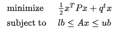

osqp
语法
osqp(q, [P], [A], [lb], [ub])
详情
求二元目标函数在线性约束条件下的最优解。具体模型如下：

返回一个元组：
- 第一个元素是字符串，表示求解状态：
- solved ：已解决
- solved inaccurate：已解决，但结果不精准
- primal infeasible：原问题无可行解
- dual infeasible：对偶问题无可行解
- maximum iterations reached：达到最大迭代次数
- run time limit reached：运行超时
- problem non convex：问题非凸
- interrupted：求解被中断
- unsolved：未解决
- 第二个元素是数值型向量，表示目标函数取到最小值时的数值解。
参数
- q 是目标函数一次项向量。
- P 是目标函数的二次项矩阵，且必须是半正定矩阵。
- A 是不等式约束的系数矩阵。
- lb 是不等式约束的左端向量。
- ub 是不等式约束的右端向量。
注：
- A、lb、ub 必须同时指定或同时省略。
- lb 和 ub 可以包含空值（NULL）,但其长度必须和A的行数匹配。 ub/lb 为空值时，视为正/负无穷，在计算时对应值为 ±1030。
例子
P = matrix(4e-2 6e-3 -4e-3 0.0, 6e-3 1e-2 0.0 0.0, -4e-3 0.0 2.5e-3 0.0, 0.0 0.0 0.0 0.0)
q = [-2, -4, 2, 3]
A = [1,3,3,-2,2,-1,1,-4,1,2,-1,-5,1,1,1,1]$4:4
l = [,,,1.0]
u = [3.0,2.0,-1.0,1.0]
res = osqp(q, P, newA, l, u)
print(res)返回：("solved",[-64.364818313795097,368.910318139716082,-548.041799338347459,244.496302999333039])